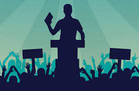

my name is hanna odulaja.i would love to contest for the president of Nigeria one day and i know i will win.i would love to serve my people.Ladies and Gentlemen! Thank you all for such warm welcome and your support. I am happy to be here with people who will make a fair and highly important decision for the whole country and with the other candidates! Okay! Let us begin! Today, Nigeria has felt the wind of change and came to the crossroad. In this insight, you have to choose whether to make a kind of U-turn or to go forward prosperous future. What does that mean for all of us? That means that the time of big changes has already come, the time for changing the existed political landscape of our country, the motherland for most of the attendants. Nowadays, there is a tendency to consider politics as a show business for unfair and ugly people. However, I am going to convince you that this trend is wrong. Primarily, I would like to underline that if I become the face of our country, there are few important things that I will do to ensure the population gets all of its needs fulfilled day after day and state after state. First and foremost, I plan to provide the new legislation that will encourage the development of our country in the future, not only to assure meeting of the needs today. In particular, it will be useful to establish new funding of the public schools in the USA. Therefore, the existing taxes should be re-channeled from the other areas to the American education system. Secondly, the economy of our country is the central theme of the presidential platform. This way, I promise to make significant changes toward economic prosperity. Economic development has always been in the minds of a majority of us; however, the previous government leaders neglected this issue. Correspondingly, I propose to promote different new businesses, open areas, and new residential areas to bring the country to life. Further, I will lower the taxes as the government should not tax country’s way of prosperity and creation of new jobs. As a representative of the country, I will control the finance of Nigeria so that the debt will be less with the coordinated economic action plan.Finally, if I am elected, you can be sure that my campaign position is stable. Moreover, I assure all of you that your concerns and issues will be adequately addressed on the national level. If the previously mentioned position is yours ambition to our country, you will make the right choice and elect the reliable, and fair leader of Nigeria .
images contact me 